Our Work & Project Showcase
Explore real transformations from our deep cleaning projects across Kraaifontein and Greater Cape Town. Browse through our work on fabric couches, lounge suites, carpets, rugs, mattresses, and car interiors.
Project Gallery
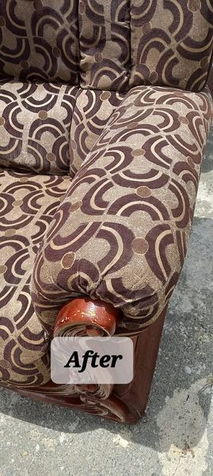
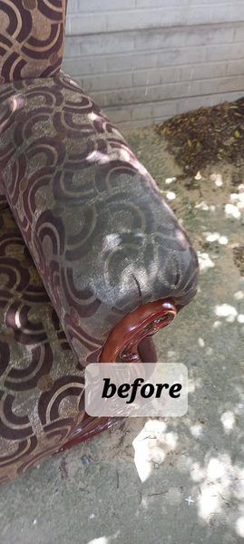
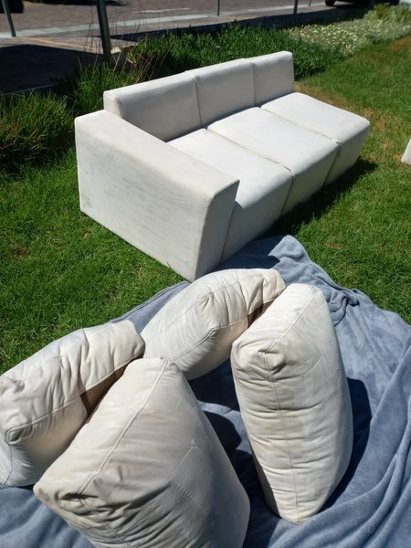
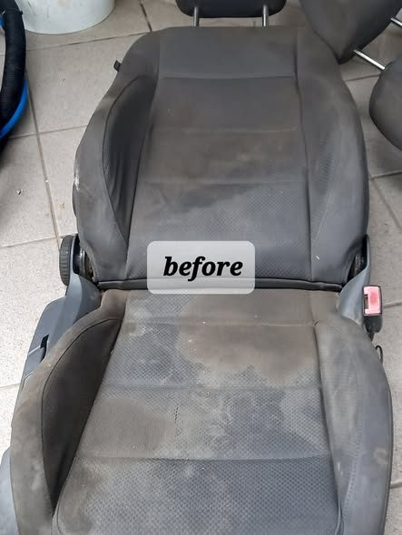
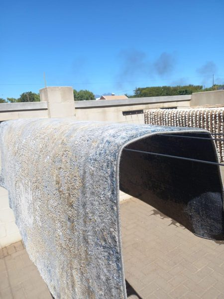
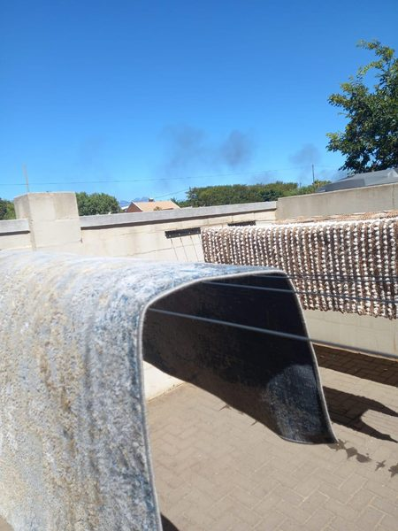
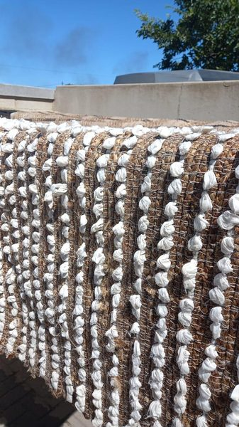
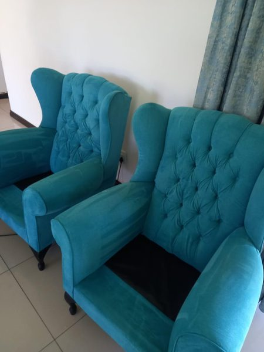
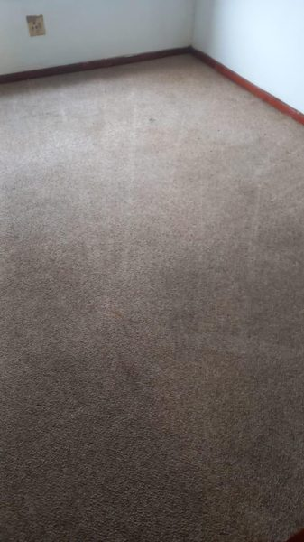
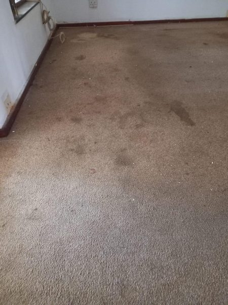
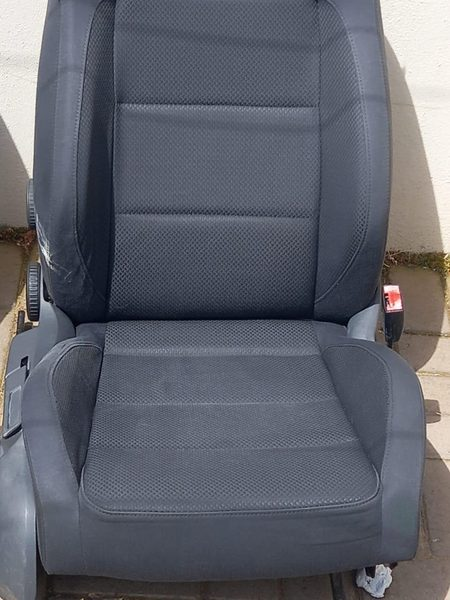
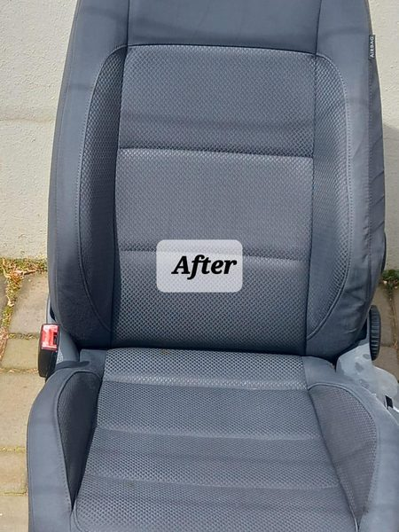
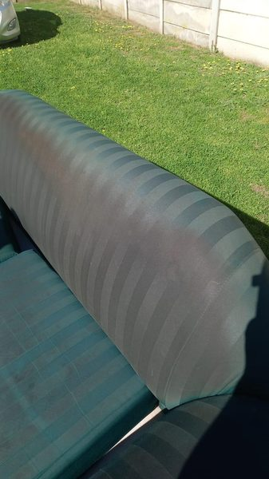
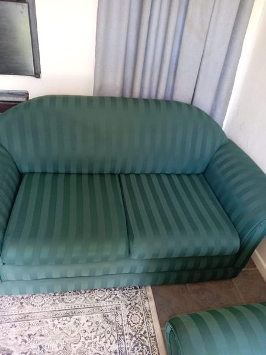
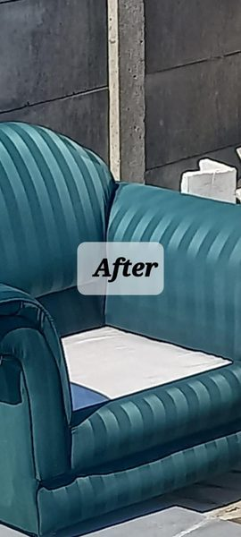
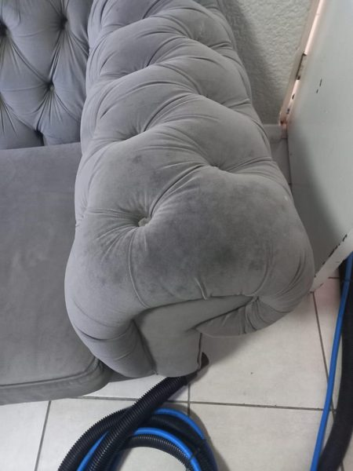
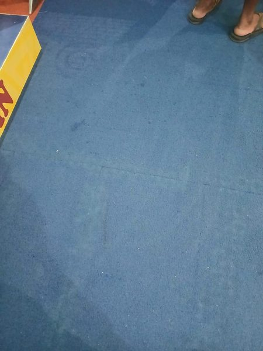
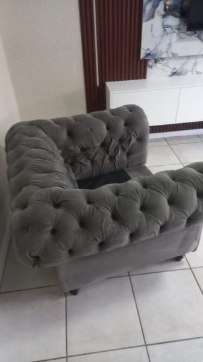
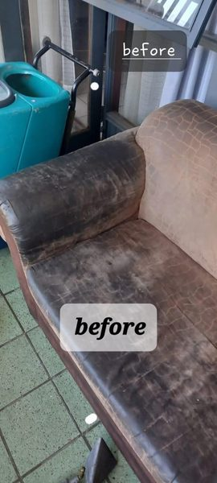
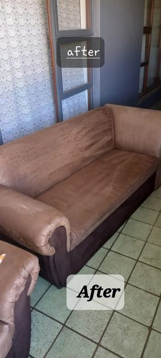
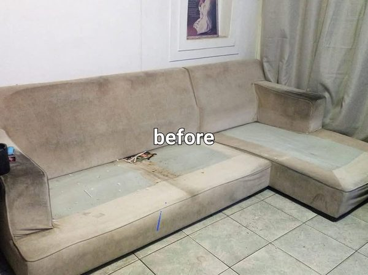
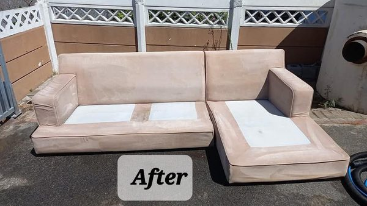
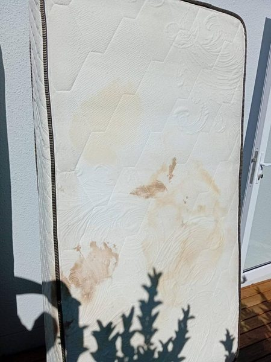
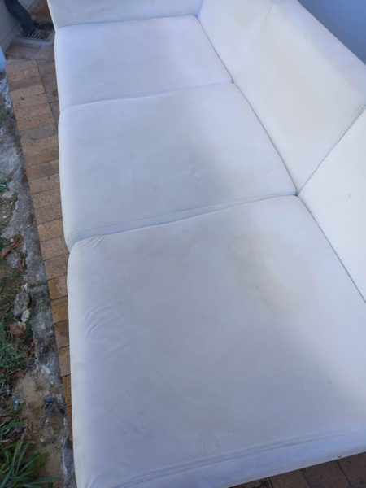
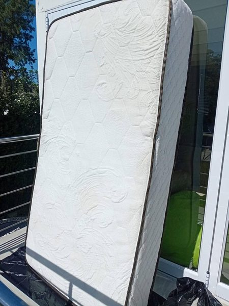
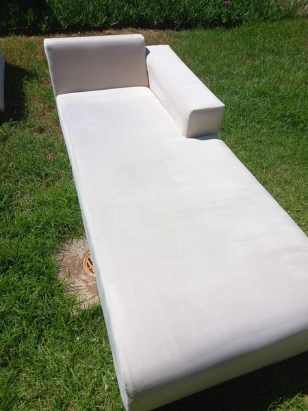
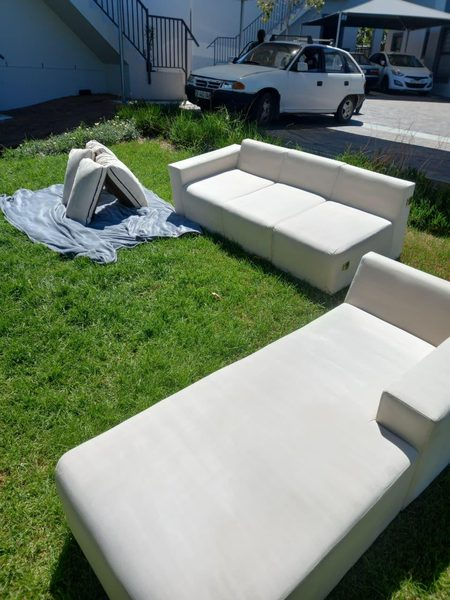
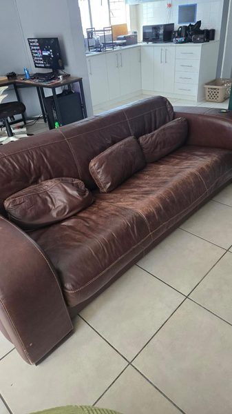
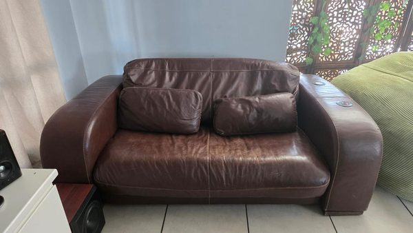
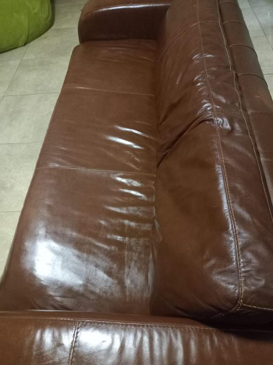
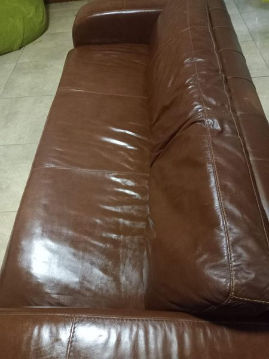
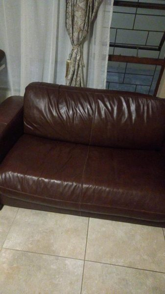
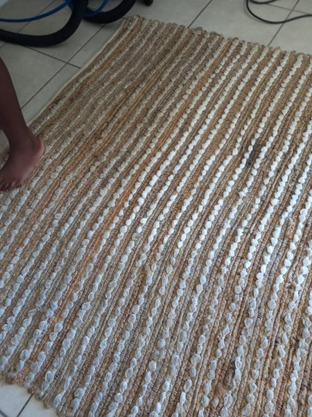
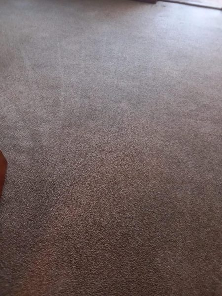
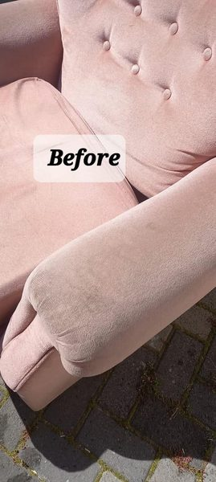
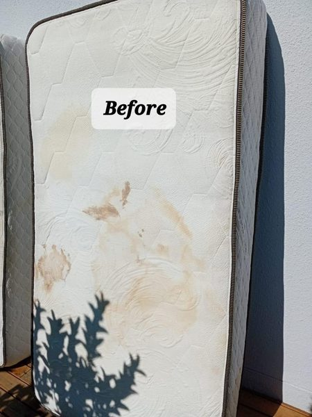
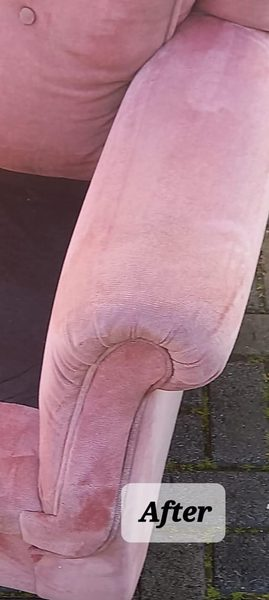
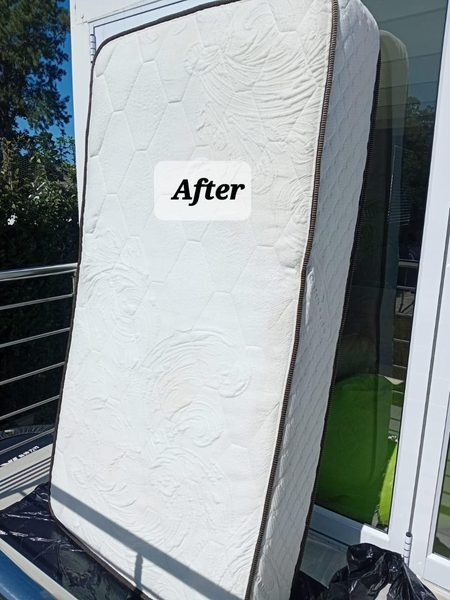
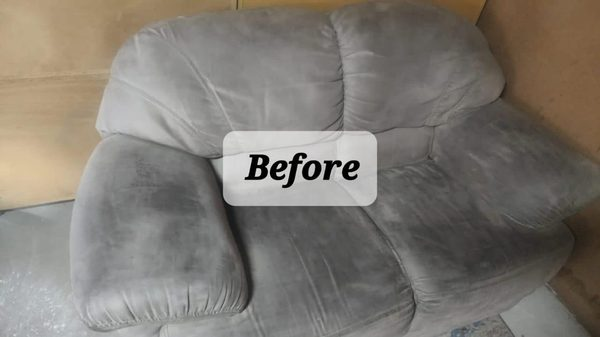
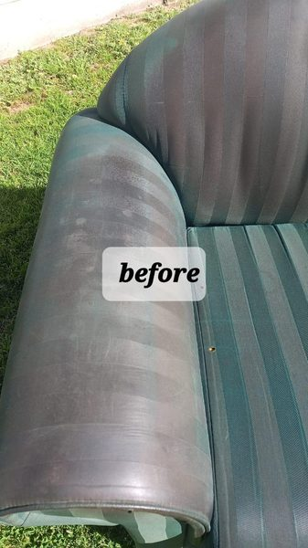
Want Results Like These?
Send us a photo of your couch, carpet, or mattress on WhatsApp for an immediate free quote.